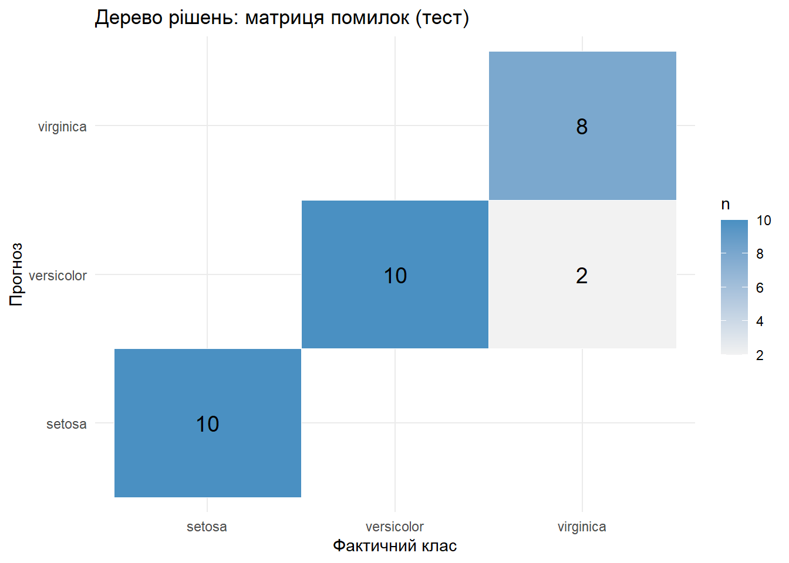
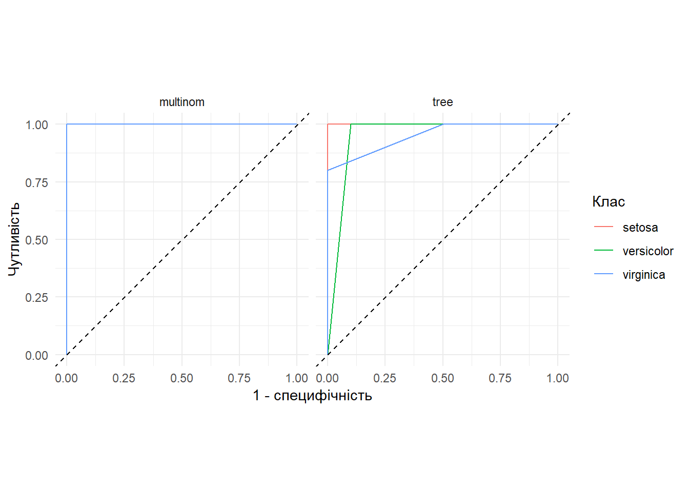
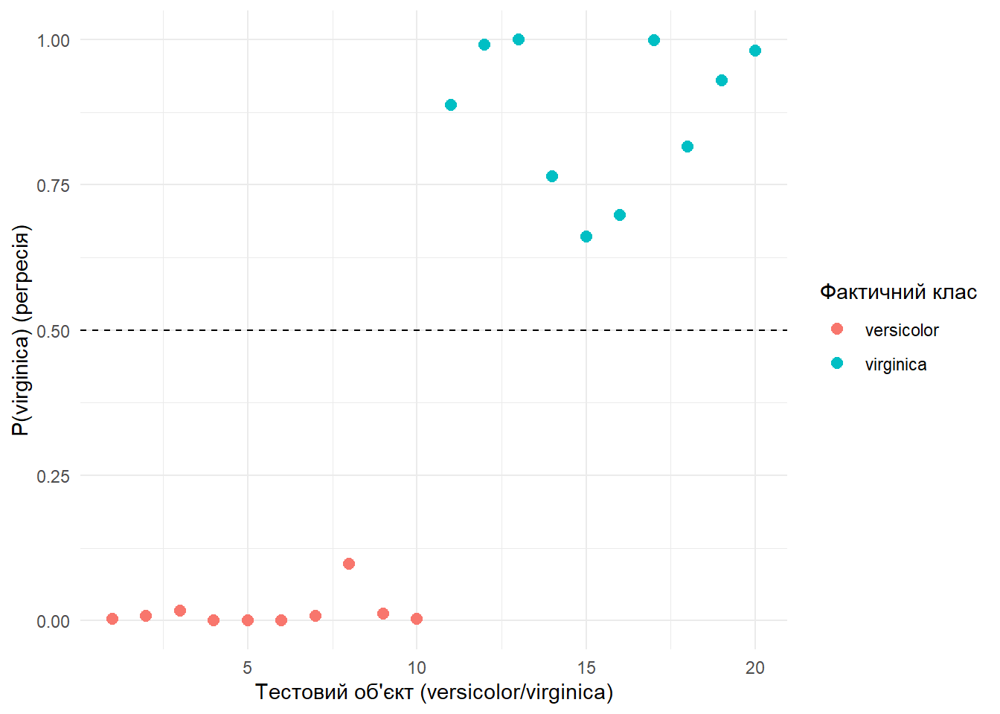
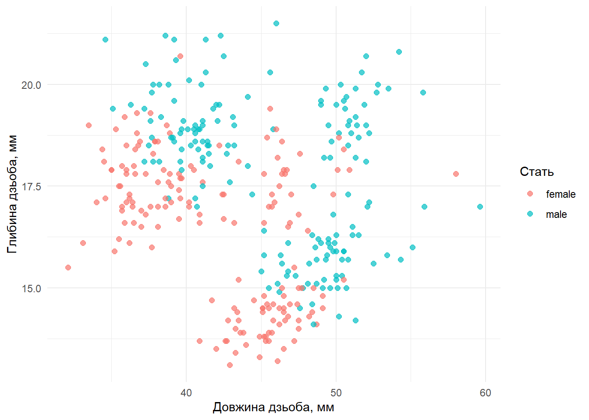

library(tidymodels)
library(tidyverse)
library(palmerpenguins)
library(discrim)
set.seed(12345)Лабораторна робота № 7. Побудова моделей класифікації
Документ зроблено в Quarto
Мета: набути практичних навичок побудови, порівняння та інтерпретації моделей класифікації в парадигмі tidymodels, а також серіалізації навченої моделі, її відновлення й перевірки тотожності прогнозів.
Завдання
Варіант 6. Повний набір iris (3 класи, 150 об’єктів), tidymodels, моделі — мультиноміальна логістична регресія (multinom_reg, рушій nnet) і дерево рішень (decision_tree, рушій rpart). Дослідницьке питання — які типи помилок домінують?
Варіант 3 (додатково). Датасет palmerpenguins — LDA-модель для визначення статі пінгвіна (завдання з практикуму ЛР4).
Схема роботи в обох частинах однакова:
- стратифіковане розбиття train/test;
- вибір моделі за внутрішньою 5-кратною CV на train (тест не використовується);
- один фінальний прогноз на тесті;
- збереження найкращого workflow у RDS, відновлення, перевірка прогнозів;
- маніфест артефакту; ## Хід роботи
Крок 1. Підготовка середовища
Крок 2. Дані iris і стратифіковане розбиття
iris_data <- iris |>
as_tibble() |>
transmute(
Sepal.Length, Sepal.Width, Petal.Length, Petal.Width,
class = factor(as.character(Species),
levels = c("setosa", "versicolor", "virginica"))
)
stopifnot(nrow(iris_data) == 150L, !anyNA(iris_data))
iris_data |> count(class)Позитивний (перший) рівень фактора — setosa; далі це важливо для матриці помилок.
set.seed(12345)
split_iris <- initial_split(iris_data, prop = 0.8, strata = class)
train_iris <- training(split_iris)
test_iris <- testing(split_iris)
bind_rows(
train_iris |> count(class) |> mutate(part = "train"),
test_iris |> count(class) |> mutate(part = "test")
) |> select(part, class, n) |> pivot_wider(names_from = part, values_from = n)Стратифікація зберігає пропорцію 50/50/50 у обох частинах.
Крок 3. Рецепти підготовки ознак
recipe_iris <- recipe(class ~ ., data = train_iris) |>
step_zv(all_predictors())
numeric_recipe <- recipe_iris |>
step_normalize(all_numeric_predictors())Параметри нормалізації (середнє, СКВ) оцінюються лише всередині fit()/CV на train, тому витоку немає. Дерево інваріантне до масштабування, тож для нього достатньо recipe_iris; для мультиноміальної регресії (nnet) нормалізація все ж корисна — вона стабілізує оптимізацію та робить інтерпретацію штрафу осмисленою.
Крок 4. Вибір моделі за внутрішньою CV на train
Гіперпараметри (глибина дерева, мінімальний розмір вузла, штраф регресії) налаштовуємо тільки на train. Метрика вибору — roc_auc з estimator = “hand_till”, попередньо задана до перегляду будь-яких результатів.
folds_iris <- vfold_cv(train_iris, v = 5, strata = class)
ctrl_iris <- control_grid(save_pred = FALSE, verbose = FALSE)
metric_set_iris <- metric_set(accuracy, roc_auc, sens, yardstick::spec)
# модель 1: мультиноміальна логістична регресія
spec_multi <- multinom_reg(penalty = tune()) |>
set_engine("nnet", maxit = 1000) |>
set_mode("classification")
wf_multi <- workflow() |>
add_recipe(numeric_recipe) |>
add_model(spec_multi)
set.seed(12345)
tune_multi <- tune_grid(
wf_multi, resamples = folds_iris,
grid = tibble(penalty = c(0, 0.001, 0.01, 0.1, 0.5, 1)),
metrics = metric_set_iris, control = ctrl_iris
)collect_metrics(tune_multi) |>
filter(.metric %in% c("accuracy", "roc_auc")) |>
select(penalty, .metric, mean, std_err) |>
mutate(across(where(is.numeric), ~ round(.x, 4))) |>
arrange(.metric, desc(mean))# модель 2: дерево рішень, сітка по глибині та min_n
spec_tree <- decision_tree(tree_depth = tune(), min_n = tune(), cost_complexity = 0.01) |>
set_engine("rpart") |>
set_mode("classification")
wf_tree <- workflow() |>
add_recipe(recipe_iris) |>
add_model(spec_tree)
set.seed(12345)
tune_tree <- tune_grid(
wf_tree, resamples = folds_iris,
grid = expand_grid(tree_depth = c(1, 2, 3, 4, 6, 8), min_n = c(2, 5, 10)),
metrics = metric_set_iris, control = ctrl_iris
)collect_metrics(tune_tree) |>
filter(.metric == "roc_auc") |>
select(tree_depth, min_n, mean, std_err) |>
mutate(across(where(is.numeric), ~ round(.x, 4))) |>
arrange(desc(mean)) |>
print(n = 18)# A tibble: 18 × 4
tree_depth min_n mean std_err
<dbl> <dbl> <dbl> <dbl>
1 2 2 0.977 0.0083
2 2 5 0.977 0.0083
3 2 10 0.977 0.0083
4 3 5 0.977 0.0083
5 3 10 0.977 0.0083
6 4 5 0.977 0.0083
7 4 10 0.977 0.0083
8 6 5 0.977 0.0083
9 6 10 0.977 0.0083
10 8 5 0.977 0.0083
11 8 10 0.977 0.0083
12 6 2 0.967 0.0077
13 8 2 0.967 0.0077
14 3 2 0.961 0.0075
15 4 2 0.959 0.0086
16 1 2 0.833 0
17 1 5 0.833 0
18 1 10 0.833 0 Вибір: у кожній сітці беремо конфігурацію з найбільшим середнім roc_auc (select_best). За рівних результатів перевага — простішій моделі.
best_multi <- select_best(tune_multi, metric = "roc_auc")
best_tree <- select_best(tune_tree, metric = "roc_auc")
final_multi <- finalize_workflow(wf_multi, best_multi)
final_tree <- finalize_workflow(wf_tree, best_tree)
bind_rows(
best_multi |> mutate(model = "multinom") |> select(model, penalty),
best_tree |> mutate(model = "tree") |> select(model, tree_depth, min_n)
)Критерій вибору між двома алгоритмами також фіксуємо до тесту — краще CV-значення roc_auc.
cv_compare <- bind_rows(
tune_multi |> collect_metrics() |> filter(.metric == "roc_auc") |>
mutate(model = "multinom") |> select(model, mean, std_err),
tune_tree |> collect_metrics() |> filter(.metric == "roc_auc") |>
mutate(model = "tree") |> select(model, mean, std_err)
) |> group_by(model) |> slice_max(mean, n = 1, with_ties = FALSE) |> ungroup()
cv_compare |> mutate(across(where(is.numeric), ~ round(.x, 4)))best_model_name <- cv_compare$model[which.max(cv_compare$mean)]
best_wf <- if (best_model_name == "tree") final_tree else final_multi
best_model_name[1] "multinom"За CV кращою є модель multinom; її остаточно навчаємо на всіх train і лише тоді прогнозуємо тест.
Крок 5. Фінальне навчання і один прогноз на тесті
final_fit <- fit(best_wf, data = train_iris)
fit_multi <- fit(final_multi, data = train_iris)
fit_tree <- fit(final_tree, data = train_iris)
predict_test <- function(fit, model_name) {
bind_cols(
truth = test_iris$class,
predict(fit, new_data = test_iris, type = "prob"),
predict(fit, new_data = test_iris, type = "class")
) |> mutate(model = model_name, .before = 1)
}
pred_multi <- predict_test(fit_multi, "multinom")
pred_tree <- predict_test(fit_tree, "tree")
pred_all <- bind_rows(pred_multi, pred_tree)
pred_all |> head(4)Крок 6. Метрики на тесті
multiclass_metrics <- function(d) {
tibble(
accuracy = accuracy_vec(d$truth, d$.pred_class),
roc_auc = roc_auc_vec(d$truth, as.matrix(d |> select(starts_with(".pred_"), -ends_with("_class"))),
estimator = "hand_till"),
sens_macro = sens_vec(d$truth, d$.pred_class, estimator = "macro"),
spec_macro = spec_vec(d$truth, d$.pred_class, estimator = "macro")
)
}
test_metrics <- pred_all |> group_by(model) |> group_map(~ {
multiclass_metrics(.x) |> mutate(model = .y$model, .before = 1)
}) |> list_rbind()
test_metrics |> mutate(across(where(is.numeric), ~ round(.x, 4)))for (m in c("multinom", "tree")) {
cat("\n", m, "\n", sep = "")
d <- pred_all |> filter(model == m)
print(conf_mat(d, truth = truth, estimate = .pred_class)$table)
}
multinom
Truth
Prediction setosa versicolor virginica
setosa 10 0 0
versicolor 0 10 0
virginica 0 0 10
tree
Truth
Prediction setosa versicolor virginica
setosa 10 0 0
versicolor 0 10 2
virginica 0 0 8Крок 7. Дослідницьке питання: які типи помилок домінують?
Матриця помилок несиметрична: помилки versicolor/virginica переважають — ці класи перекриваються за розмірами пелюстки, тоді як setosa лінійно віддільна. Нижче — явний підрахунок за типами.
error_types <- pred_all |>
mutate(truth = as.character(truth), estimate = as.character(.pred_class)) |>
filter(truth != estimate) |>
mutate(pair = paste(truth, "→", estimate)) |>
count(model, pair, sort = TRUE)
error_typespred_all |>
group_by(model) |>
summarise(n_test = n(), n_errors = sum(truth != .pred_class),
err_rate = round(mean(truth != .pred_class), 4))pred_tree |>
mutate(truth = as.character(truth), estimate = as.character(.pred_class)) |>
count(truth, estimate) |>
ggplot(aes(truth, estimate, fill = n)) +
geom_tile(color = "white") +
geom_text(aes(label = n), size = 5) +
scale_fill_gradient(low = "#f2f2f2", high = "#4a90c2") +
labs(x = "Фактичний клас", y = "Прогноз", title = "Дерево рішень: матриця помилок (тест)") +
theme_minimal()
pred_all |>
group_by(model) |>
group_map(~ roc_curve(.x, truth, starts_with(".pred_") & !ends_with("_class"),
estimator = "hand_till") |> mutate(model = .y$model)) |>
list_rbind() |>
ggplot(aes(1 - specificity, sensitivity, color = .level)) +
geom_path() +
geom_abline(linetype = "dashed") +
facet_wrap(~ model) +
coord_equal() +
labs(x = "1 - специфічність", y = "Чутливість", color = "Клас") +
theme_minimal()
Крок 8. Ймовірності найпроблемнішої пари класів
pred_multi |>
filter(truth %in% c("versicolor", "virginica")) |>
mutate(id = row_number()) |>
ggplot(aes(id, .pred_virginica, color = truth)) +
geom_point(size = 2.5) +
geom_hline(yintercept = 0.5, linetype = "dashed") +
labs(x = "Тестовий об'єкт (versicolor/virginica)", y = "P(virginica) (регресія)",
color = "Фактичний клас") +
theme_minimal()
Точки навколо 0,5 — саме ті об’єкти, які модель не розрізняє впевнено. Поріг тут не підбираємо: тест не використовується для налаштування.
Крок 9. Серіалізація у файл і перевірка відновлення
artifact_dir <- "artifacts_lab7"
dir.create(artifact_dir, recursive = TRUE, showWarnings = FALSE)
model_path <- file.path(artifact_dir, "iris_best_workflow.rds")
saveRDS(final_fit, file = model_path, compress = "xz")
file.info(model_path) |> select(size) |> mutate(md5 = unname(tools::md5sum(model_path)))restored_fit <- readRDS(model_path)
before <- predict(final_fit, new_data = test_iris, type = "prob")
after <- predict(restored_fit, new_data = test_iris, type = "prob")
restoration <- tibble(
max_abs_diff = max(abs(as.matrix(before) - as.matrix(after))),
classes_identical = identical(
predict(final_fit, test_iris, type = "class")$.pred_class,
predict(restored_fit, test_iris, type = "class")$.pred_class
)
)
restorationstopifnot(restoration$max_abs_diff < 1e-12, restoration$classes_identical)Крок 10. Маніфест артефакту
manifest <- tibble(
model_id = "iris_best_v1",
data = "iris (150)", task = "3-class",
chosen_model = best_model_name,
predictors = paste(names(train_iris)[names(train_iris) != "class"], collapse = ", "),
target_levels = paste(levels(train_iris$class), collapse = ", "),
split_seed = 12345, cv = "5-fold stratified", metric = "hand_till roc_auc",
test_accuracy = round(test_metrics$accuracy[test_metrics$model == best_model_name], 4),
r_version = as.character(getRversion()),
tidymodels_version = as.character(packageVersion("tidymodels")),
md5 = unname(tools::md5sum(model_path))
)
readr::write_csv(manifest, file.path(artifact_dir, "manifest.csv"))
manifestВаріант 3 — LDA для статі пінгвінів
Дані palmerpenguins: 344 спостереження, 3 види, 3 острови. Мета — класифікувати стать (sex) за морфометрією: довжина/глибина дзьоба, довжина плавця, маса тіла. Ознаки species, island і year виключаємо, щоб не допустити неявного введення “ярликів”.
Дані
peng <- penguins |>
as_tibble() |>
drop_na(sex, bill_length_mm, bill_depth_mm, flipper_length_mm, body_mass_g) |>
transmute(bill_length_mm, bill_depth_mm, flipper_length_mm, body_mass_g,
sex = factor(sex, levels = c("female", "male")))
peng |> count(sex)peng |> summarise(across(where(is.numeric), list(mean = ~ round(mean(.x), 1), sd = ~ round(sd(.x), 1))))Після видалення пропусків: 333 об’єктів, 165 жінок і 168 чоловіків — майже збалансовано.
set.seed(12345)
split_peng <- initial_split(peng, prop = 0.8, strata = sex)
train_peng <- training(split_peng)
test_peng <- testing(split_peng)
bind_rows(train_peng |> count(sex) |> mutate(part = "train"),
test_peng |> count(sex) |> mutate(part = "test")) |>
pivot_wider(names_from = part, values_from = n)Модель LDA і CV
spec_lda <- discrim_linear() |> set_engine("MASS") |> set_mode("classification")
recipe_peng <- recipe(sex ~ ., data = train_peng) |>
step_zv(all_predictors())
wf_lda <- workflow() |> add_recipe(recipe_peng) |> add_model(spec_lda)
set.seed(12345)
folds_peng <- vfold_cv(train_peng, v = 5, strata = sex)
set.seed(12345)
lda_res <- wf_lda |> fit_resamples(
resamples = folds_peng,
metrics = metric_set(accuracy, roc_auc, sens, yardstick::spec)
)
lda_res |> collect_metrics() |> mutate(mean = round(mean, 4), std_err = round(std_err, 4))discrim_linear() не має гіперпараметрів, тому CV тут слугує лише для оцінки стабільності й не бере участі у виборі. Порівняння з альтернативою (регуляризований LDA) — предмет подальших лаб.
Тест і матриця помилок
lda_fit <- fit(wf_lda, data = train_peng)
pred_peng <- bind_cols(
truth = test_peng$sex,
predict(lda_fit, new_data = test_peng, type = "prob"),
predict(lda_fit, new_data = test_peng, type = "class")
)
tibble(
accuracy = accuracy_vec(pred_peng$truth, pred_peng$.pred_class),
sensitivity = sens_vec(pred_peng$truth, pred_peng$.pred_class, event_level = "first"),
specificity = spec_vec(pred_peng$truth, pred_peng$.pred_class, event_level = "first"),
roc_auc = roc_auc_vec(pred_peng$truth, pred_peng$.pred_female, event_level = "first")
) |> mutate(across(where(is.numeric), ~ round(.x, 4)))conf_mat(pred_peng, truth = truth, estimate = .pred_class) Truth
Prediction female male
female 28 1
male 5 33ggplot(peng, aes(bill_length_mm, bill_depth_mm, color = sex)) +
geom_point(alpha = 0.7, size = 2) +
labs(x = "Довжина дзьоба, мм", y = "Глибина дзьоба, мм", color = "Стать") +
theme_minimal()
Помилки LDA концентруються на межі перекриття морфометричних хвостів: частина самок мають “великі” розміри, властиві самцям, і навпаки. Тобто некоректний прогноз — це не випадковий шум, а систематична неоднозначність у зоні перетину.
Серіалізація LDA
peng_path <- file.path(artifact_dir, "penguins_lda_workflow.rds")
saveRDS(lda_fit, file = peng_path, compress = "xz")
restored_lda <- readRDS(peng_path)
max(abs(predict(lda_fit, test_peng, type = "prob")$.pred_male -
predict(restored_lda, test_peng, type = "prob")$.pred_male))[1] 0Висновки
- iris. Усі конфігурації обох моделей на CV були оцінені на однакових 5 складках. За hand_till ROC AUC найкращою виявилась multinom (1). На тесті (30 об’єктів) обрана модель має accuracy 1 і ROC AUC 1; альтернативна — accuracy 0.9333. Це оцінка одного розбиття, а не доказ переваги алгоритму.
- Типи помилок. Домінують переплутування versicolor ↔︎ virginica — найважча для розрізнення пара; setosa не плутається майже ніколи. Дерево на такій майже лінійно віддільній межі дає більш “блокову” межу, ніж мультиноміальна регресія, тож може помилятися на об’єктах поблизу стику областей.
- Ймовірність ≠ клас. Об’єкти з P(best class) близько 0,5 - це проблемна зона; поріг налаштовується на train/CV, не на тесті.
- Серіалізація. Навчений workflow (модель + навчений рецепт) у RDS відтворює прогнози з похибкою < 1e-12, те саме підтверджує відновлення з SQLite BLOB. Прогнозність артефакту не гарантує — RDS-файл слід вважати недовіреним вмістом, а версії R і пакетів, схему ознак та MD5 треба зберігати (див. manifest.csv).
- Пінгвіни (варіант 3). LDA розрізняє стать краще за випадковий рівень: accuracy 0.9104, ROC AUC 0.9866. Помилки — на межі перекриття розмірів статей.